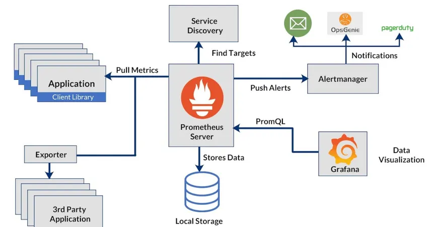
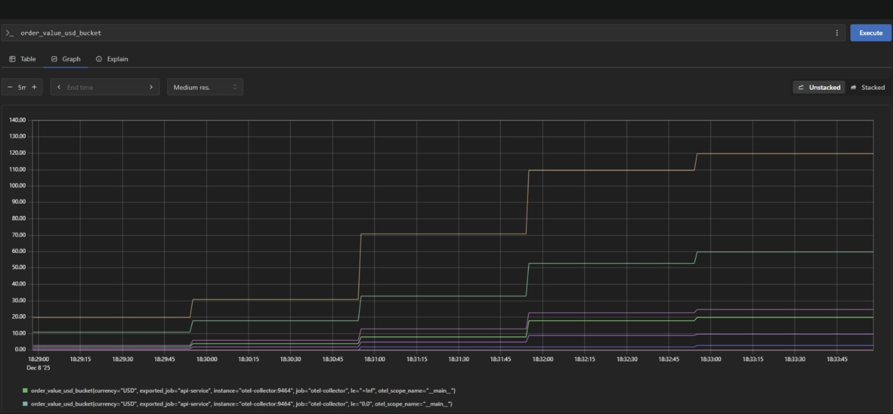

1. Prometheus Overview & History
Prometheus 🔱
Overview - What it does
Meet Prometheus, the heart of our monitoring setup. At its core, it's an open-source system monitoring and alerting toolkit designed specifically to handle time-series data. What is time-series data? Simply put, it's a sequence of measurements (metrics) taken at specific points in time—like tracking your CPU usage, checking how long a request takes (latency), or seeing how much memory your server is consuming.
Prometheus operates on a unique pull model: it actively goes out and scrapes (fetches) these metrics from instrumented targets (like your web application or database) at regular intervals. Best of all, it comes with its own exceptionally powerful query language, PromQL, which we'll use to analyze and visualize all this data.
History
It's always good to know where a key technology comes from! Prometheus was first conceived and developed at SoundCloud back in 2012. The team needed a monitoring solution that could truly scale with their fast-growing microservices architecture, something their older systems couldn't handle.
The design was heavily inspired by an internal monitoring system at Google called Borgmon.
- 2012: Development begins inside SoundCloud.
- 2015: It's released to the world as open-source software, quickly gaining traction.
- 2016: A major milestone! Prometheus became only the second project (right after Kubernetes) to join the Cloud Native Computing Foundation (CNCF). This move cemented its status as the go-to standard for monitoring in modern, cloud-native environments.
2. Installation & Core Concepts
How to Install/Run
The easiest and most reliable way to start working with Prometheus is by using Docker and Docker Compose. This method guarantees a consistent environment for all the exercises in our course.
1. Pull the Docker Image:
We'll start with the official, reliable Prometheus image:
docker pull prom/prometheus2. Configure and Run (using Docker Compose):
You'll define your services in a docker-compose.yml file. This usually involves mounting a local prometheus.yml configuration file to tell Prometheus what to monitor.
A crucial piece is the prometheus.yml file, which defines the scraping jobs:
scrape_configs:
- job_name: 'prometheus'
static_configs:
- targets: ['localhost:9090'] # Prometheus scrapes itself for internal health metrics
- job_name: 'node_exporter'
static_configs:
- targets: ['node-exporter:9100'] # This scrapes a separate server's OS metrics
3. Start the stack:
Run this simple command in your terminal to start the server in the background:
docker-compose up -d prometheusOnce started, the Prometheus server immediately begins the scraping process defined in the configuration.
Prometheus Architecture
To understand how this all fits together, here is a diagram of the core Prometheus architecture:
3. Our Views on Prometheus 💡
Prometheus vs. Competition (Why it's useful)
Prometheus has become the clear leader in the cloud-native monitoring space. We believe it stands out significantly when compared to older, agent-based systems like Nagios or many expensive commercial SaaS solutions, primarily because of these core strengths:
- Pull Model (Scalability): The pull model is perfect for dynamic cloud environments where services come and go. Prometheus initiates the connection, which is easier to manage than constantly configuring dozens of agents to push data to a central location.
- Multi-Dimensional Data Model (Labels): This is a game-changer! Metrics aren't just flat numbers; they are augmented with labels. For instance, a metric like
http_requests_totalcan be segmented by labels likemethod="GET",path="/api/users", orstatus="200". This makes debugging and analysis incredibly powerful. - PromQL's Power: The PromQL query language is purpose-built for time-series data. It goes far beyond simple filtering, allowing for complex aggregations, rate-of-change calculations, and joins across different metric sets. This makes deep analysis simpler and more effective.
- CNCF Adoption: Its tight, community-driven integration with Kubernetes (K8s) makes it the default, battle-tested choice for any modern, containerized application architecture.
Our Opinion: While commercial SaaS offerings can be simple to set up, Prometheus offers unparalleled control, superior cost-efficiency, and the flexibility needed for modern, high-volume data collection. Its open standard has fostered a massive ecosystem (Exporters, Grafana integration) that is simply unmatched in the cloud-native domain.
4. Practical Application (PromQL)
Prometheus's fundamental job is to store your metrics efficiently and give you a powerful interface to query that data using PromQL.
Core Functionality in a Nutshell:
- Scraping: Periodically fetches metrics from configured targets.
- Storage: Saves collected data in its internal Time Series Database (TSDB).
- Querying: Executes PromQL queries via its expression browser or external tools like Grafana.
Example: Analyzing Web Traffic
In our course project, we use Prometheus to monitor the live performance of our web services. Let's look at a critical, real-world query that checks the average rate of successful (HTTP status 200) requests over the last 5 minutes.
PromQL Query:
rate(http_requests_total{status="200"}[5m])This query calculates the per-second average of the counter metric http_requests_total, specifically filtering for requests where the status label is exactly "200", and smoothing the rate calculation over a 5-minute time window.
Visualizing the Query
Here’s how that query looks when executed in the Prometheus UI, giving you a graph of success rates over time:
5. Quiz/Learnings
Key Takeaways
- Prometheus uses a pull model to collect data from targets.
- Metrics are uniquely identified by a metric name and a set of key-value pairs called labels.
- The powerful query language used to interact with Prometheus data is PromQL.
- Prometheus stores data efficiently in its internal TSDB (Time Series Database).
Self-Assessment Quiz 🧠
-
Question 1: Which term describes Prometheus's method of collecting data from targets?
Answer: Pull / Scraping
-
Question 2: What is the name of the powerful query language used to interact with Prometheus data?
Answer: PromQL
-
Question 3: If you want to segment a metric by the HTTP status code (e.g., 200, 404), what Prometheus concept would you use?
Answer: Labels
6. Conclusion
Prometheus is much more than just a monitoring utility; it is truly the backbone of modern observability in cloud-native infrastructures. By offering a robust, multi-dimensional data model and a query language specifically crafted for time-series analysis, it empowers engineers to move past simple "is it up?" checks and dive into deep performance debugging and creating sophisticated, actionable alerts.
Mastering Prometheus is a fundamental and vital step toward building resilient, scalable, and fully observable web analytics pipelines.
Module Completion
Not marked as complete yet.